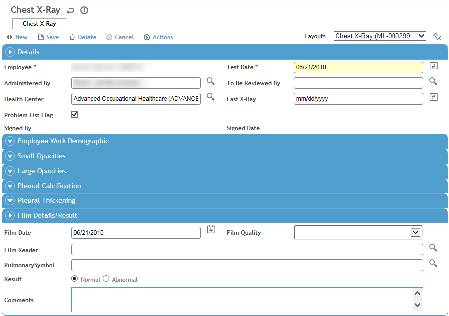

Results of an employee’s chest x-rays are stored and monitored.
In the Occupational Health menu, click Chest X-Ray and use the search list to select an employee.
Click a link to view details of a previous x-ray, or click New to enter results of a new x-ray for the employee.

Enter or update the following information:
date (and time, if added to a custom layout) of testing and last x-ray, examiner’s name, and health center
the practitioner responsible for reviewing this record. Once that practitioner signs the record (Actions»Sign), the record becomes locked from further edits.
indicate if the restriction is to appear on the Problem List (see Working with the Problem List).
employee’s position and geographic and administrative locations within the organization
test values for small opacities, large opacities, pleural calcification and pleural thickening
details for the film date, film quality, reader’s name, date of last x-ray and the pulmonary symbol.
Use the Documents tab to link an external file to the record to provide easy access to the file (for more information, see Linking or Importing a Document).
The Letters tab allows you to view past letters or generate new letters to employees. Form letters are stored in the LettersTemplate look-up table. For information about creating letters, see Generating a Letter.
Click Save.